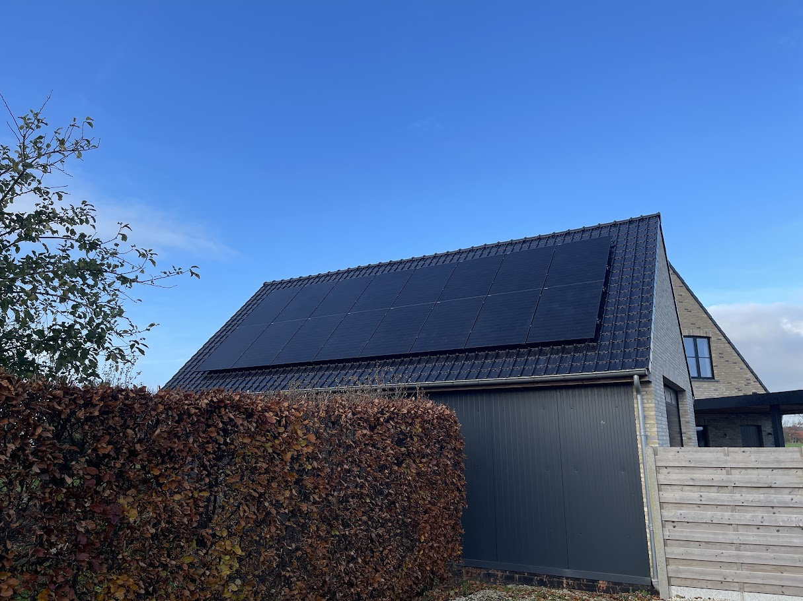
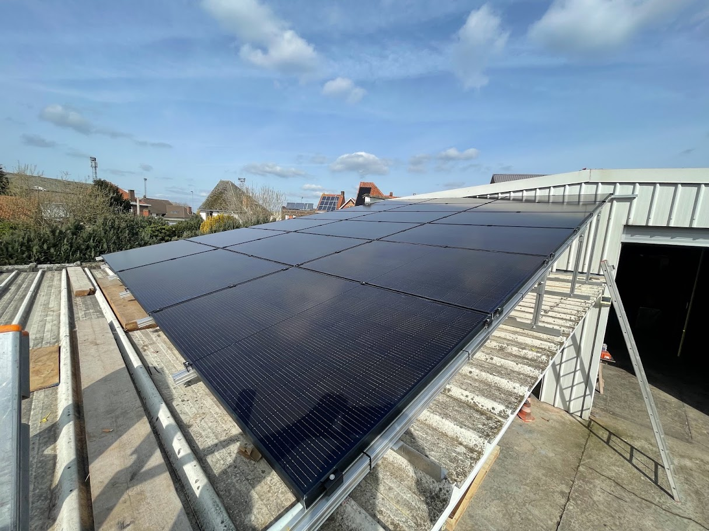

Zonnepanelen op hellend dakVerzorgde plaatsing, optimaal afgestemd op het beschikbare dakoppervlak en de oriëntatie.
Een zonne-installatie wordt afgestemd op uw dak, verbruik en toekomstige energiebehoefte. We bekijken ook de combinatie met een hybride omvormer, batterij of laadpaal.
Een zonne-installatie wordt afgestemd op uw dak, verbruik en toekomstige energiebehoefte. We bekijken ook de combinatie met een hybride omvormer, batterij of laadpaal. U hebt rechtstreeks contact met uw installateur, van advies en offerte tot de uiteindelijke plaatsing.
Een selectie van installaties die we zelf hebben uitgevoerd.

